0%
responden pernah mengalami gagal panen dan tanaman rusak.
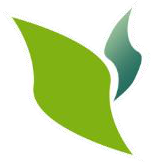
PE-NOVTRA Hubungi kami2-in-1 Smart Modular Growing System
Media tanam dan hidroponik dalam satu bak modular, terlindung dari hama dan cuaca ekstrem, dan bisa dipantau langsung dari ponsel.
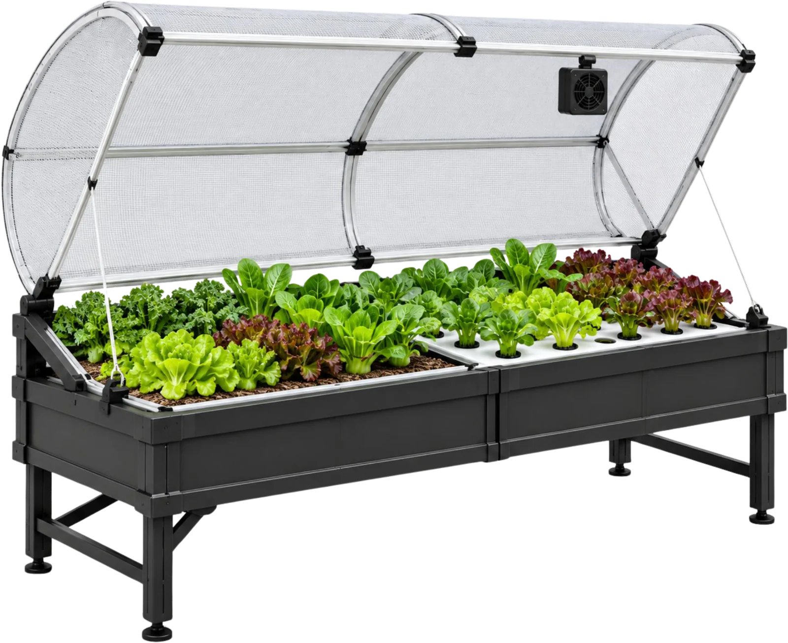
Latar belakang
responden pernah mengalami gagal panen dan tanaman rusak.
menyebut hama & penyakit sebagai penyebab utama.
terkendala cuaca ekstrem: panas terik dan hujan lebat.
Sumber: BPS, Statistik Hortikultura 2024 (2025); Akbar et al. (2025), The Journal of Indonesia Sustainable Development Planning 6(2), 328–346; social listening TikTok PE-NOVTRA (2026).
PE-NOVTRA adalah smart home growing system modular yang menggabungkan media tanam dan hidroponik dalam satu desain. Dirancang untuk melindungi tanaman dari hama dan cuaca, supaya budidaya di rumah jadi praktis dengan bantuan teknologi digital.
Media tanam dan hidroponik berdampingan dalam satu bak. Pilih sesuai jenis tanaman.
Naungan insect net melindungi tanaman dari hama dan cuaca ekstrem.
Sensor membaca kondisi lingkungan, kipas dan lampu bisa diatur otomatis lewat aplikasi.
Mudah dipasang dan tampil rapi di teras, balkon, atau halaman rumah modern.
Jelajahi alatnya
Klik titik pada alat atau daftar di samping untuk melihat detailnya.
Cara kerja
Pilih media tanam atau hidroponik sesuai tanaman yang ingin dibudidayakan.
Sensor membaca suhu, kelembapan, dan intensitas cahaya di sekitar tanaman.
Naungan dan kipas ventilasi menyesuaikan kondisi agar tanaman tetap nyaman.
Pantau dan rawat tanaman dari aplikasi, lalu nikmati panen yang lebih konsisten.
Produk & ekosistem
Media tanam organik, benih premium, dan nutrisi hidroponik untuk isi ulang grow kit.
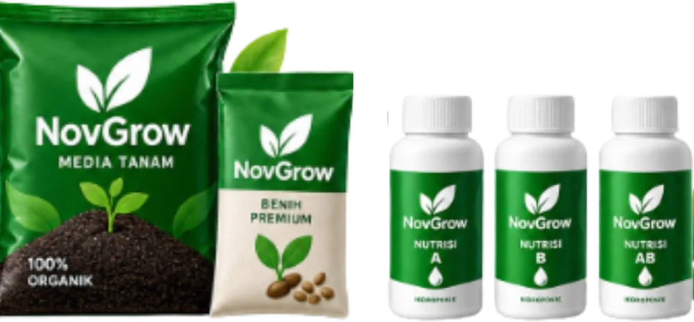
Servis, suku cadang, dan refill grow kit supaya alat terus produktif.
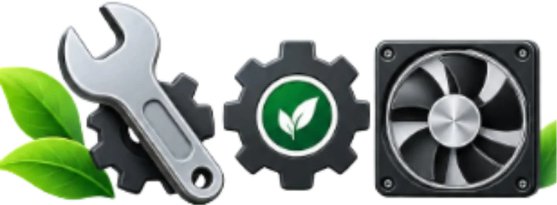
Pelatihan budidaya bersama sekolah dan komunitas, didampingi praktisi bersertifikat BNSP.
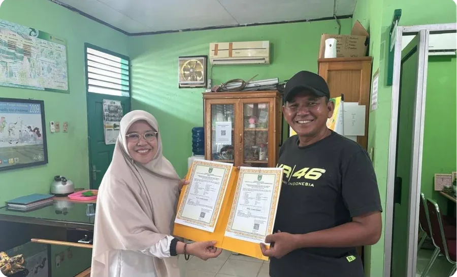
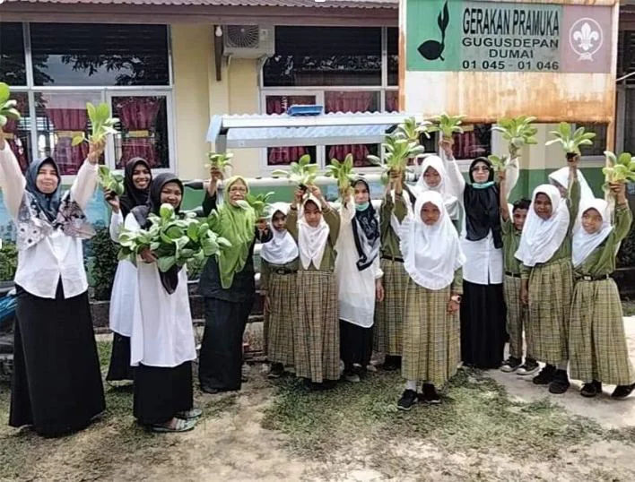
Dampak berkelanjutan
PE-NOVTRA membantu masyarakat menanam pangan secara mandiri dengan cara yang lebih praktis, hemat, dan berkelanjutan.
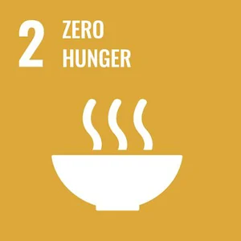
Akses pangan segar dan ketahanan pangan keluarga lewat budidaya skala rumah tangga.
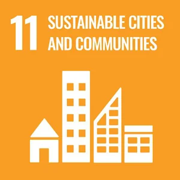
Solusi budidaya yang cocok untuk rumah, apartemen, dan komunitas perkotaan.
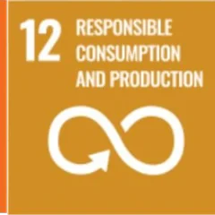
Budidaya terkontrol yang mengurangi pemborosan input dan memaksimalkan hasil.
Perjalanan kami
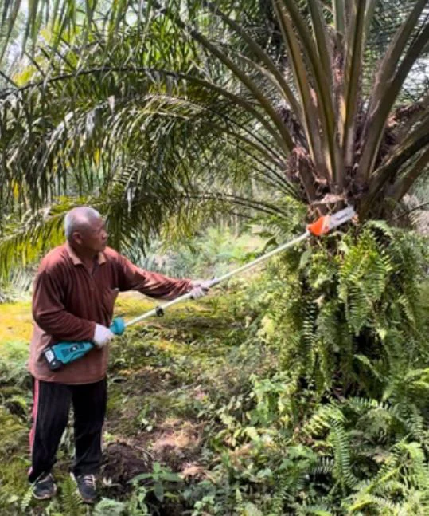
Berawal dari pengalaman langsung di perkebunan kelapa sawit. Kami mengembangkan teknologi alat panen sawit dan mencatat penjualan awal Rp8 juta.
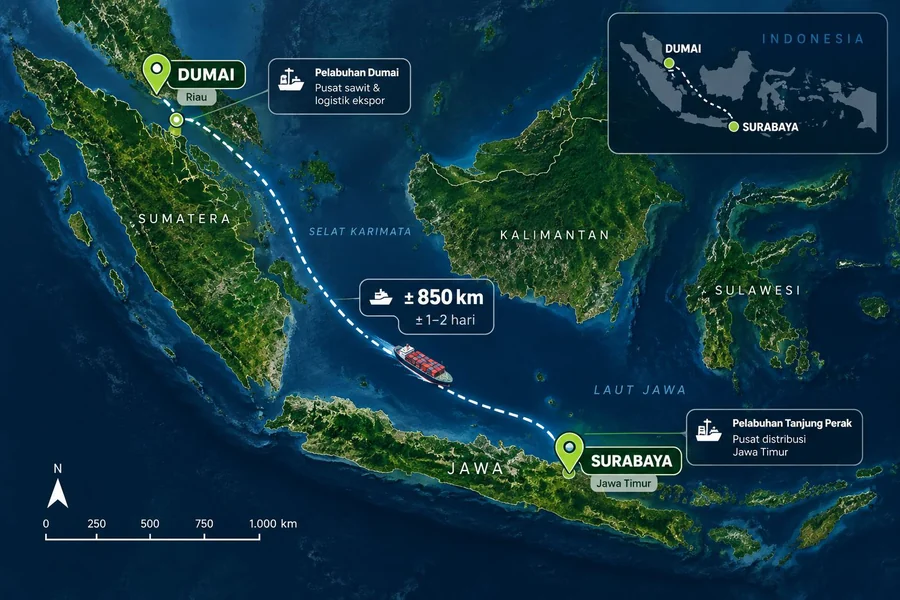
Eksplorasi pasar membuka peluang di kebutuhan budidaya perkotaan, pasar yang lebih dekat dengan konsumen.
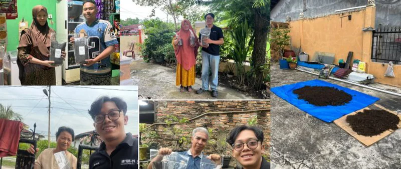
Lahir NovGrow, media tanam dari limbah sawit, dan Novtra Agro sebagai lini agribisnis. 150 produk terjual.
Fokus ke PE-NOVTRA: 2-in-1 smart modular growing system untuk home growing yang terlindungi dan terdampingi digital.
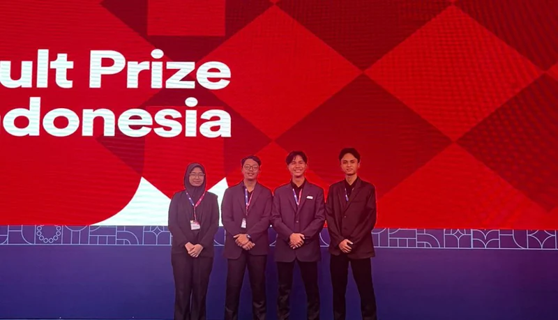
Bagian dari 1.500 startup terbaik dunia dari 18.000+ tim di 130+ negara.
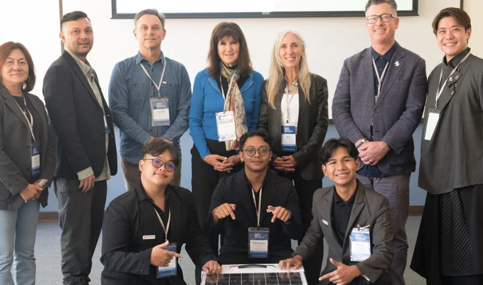
Finalis global kompetisi Fowler Global Social Innovation Challenge di San Diego, USA.
Validasi pasar
Didukung oleh
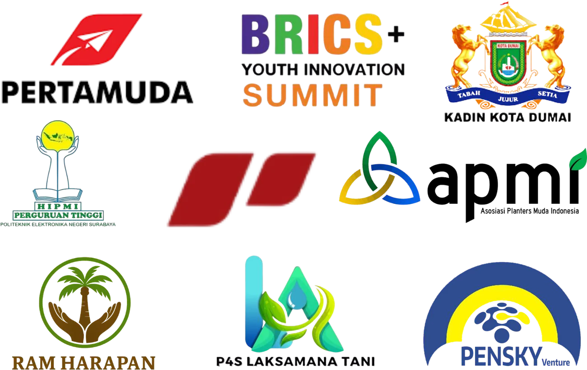
Tim & advisor
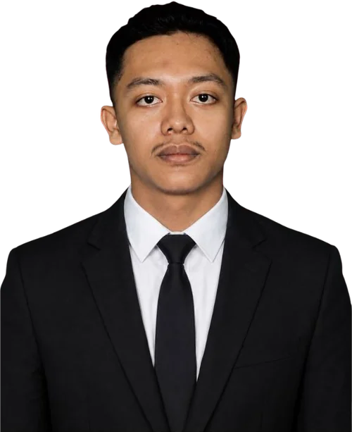
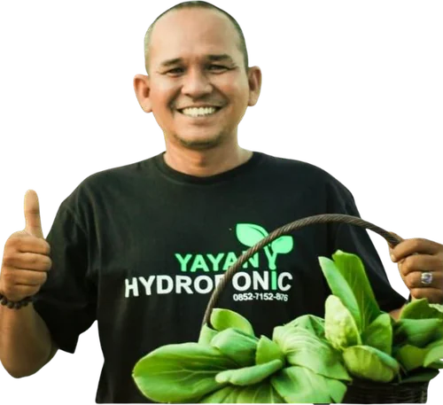
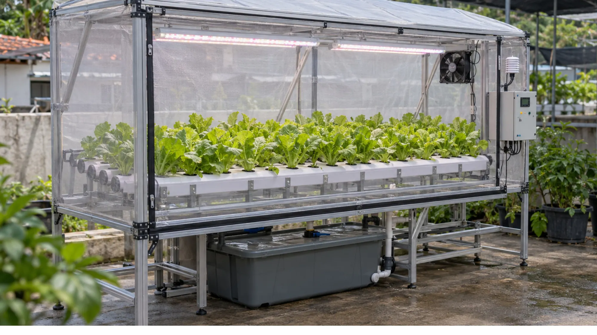
Ceritakan ruang dan tanaman yang ingin kamu budidayakan. Tim kami bantu pilih konfigurasi yang pas.